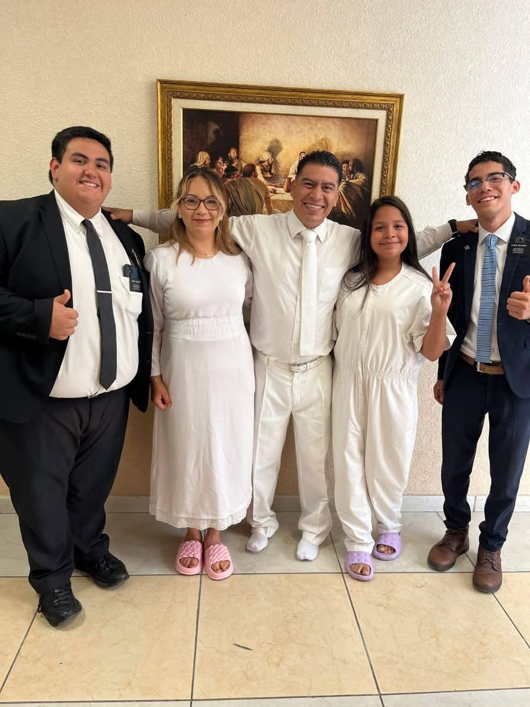
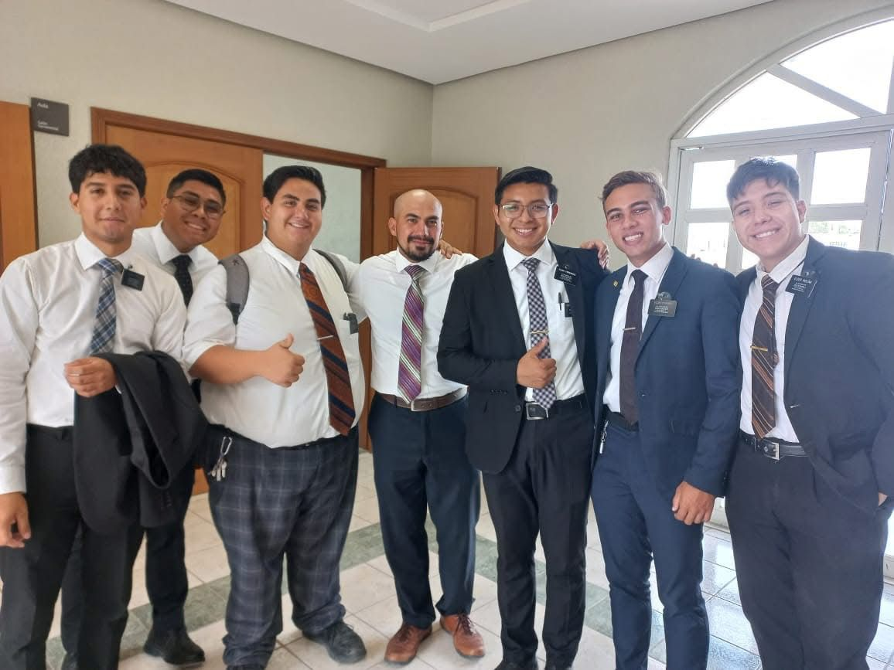

Bienvenido a mi pagina Personal, aqui encontraras datos curiosos sobre mi.
Mi nombre completo es Douglas Alberto Aguilar Tejada y soy de El Salvador y tengo la edad de 21 años, soy miembro de La Iglesia de Jesucristo De Los Santos De Los Ultimos Dias y servi una mision de tiempo completo en la mision Mexico Monterrey Este y cuando estuve en la mision estuve 6 meses en Oficinas y me tocaba usar mucho la computadora y fui desarrollando un amor por la tecnologia que me llevo a poder tomar un curso de desarrollo web cuando regrese a mi casa en El Salvador y opte por estudiarlo en la increible fundacion de FUNVAL.
Fotos en la mision
 cuando estuve en la mision desarrolle una seria de habilidades blandas muy importantes
Mi himno favorito es el numero 164 Pon tu hombro a la lid, les dejo mi estrofa favorita.
No seas, pues, cual haragán;
la lucha es real
ven contra de la tentación;
pon tu hombro a la lid.
Estas fueron alguna curiosidades sobre mi, si te intereso y quieres saber mas te dejo mis redes sociales